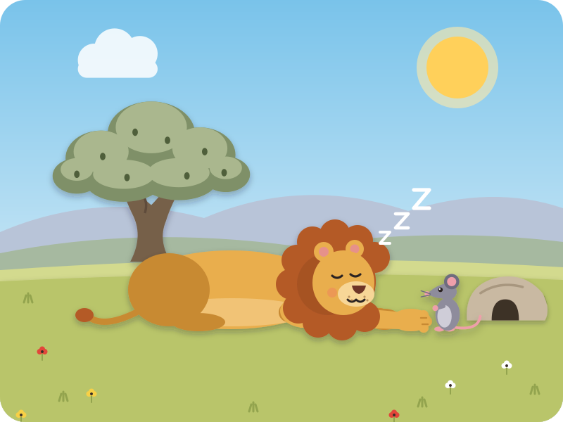
A fable from ancient Greece
The Lion and the Mouse
"Story, story — are your ears open?" Kai: "Open!"
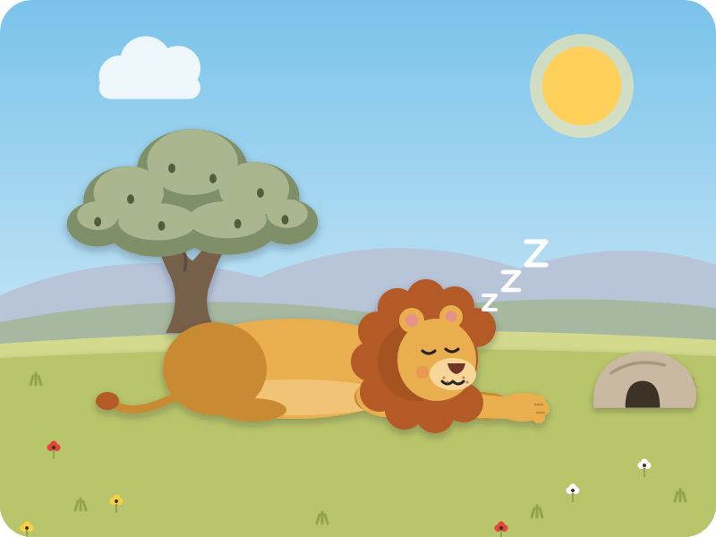
Once upon a time, on a hot, sunny day, a great big lion lay down under an olive tree.
He shut his eyes, and soon he was fast asleep. "Zzzz… zzzz…" Kai snores
Along came a tiny little mouse, hurrying home. Scurry, scurry, scurry! Kai's fingers scurry
She was in such a hurry that she ran right over the lion's big paw.
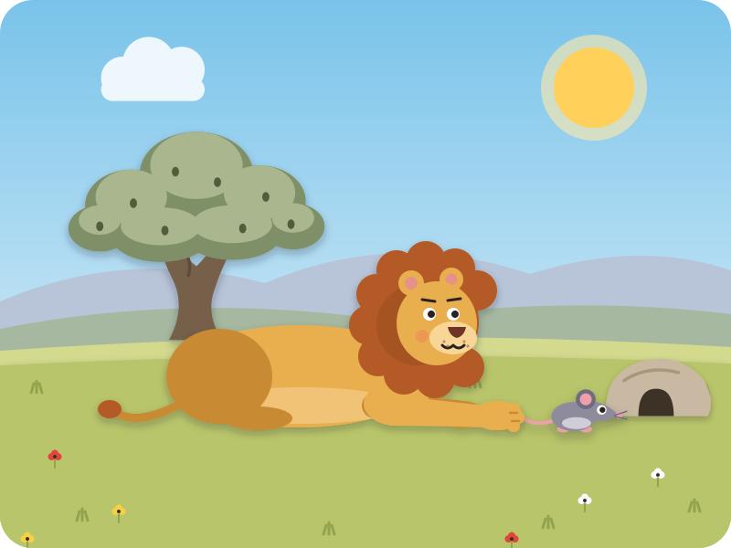
The lion woke up. Down came his paw — PLOP! — right on the tip of her tail.
"Who's that tickling my paw?" he rumbled.
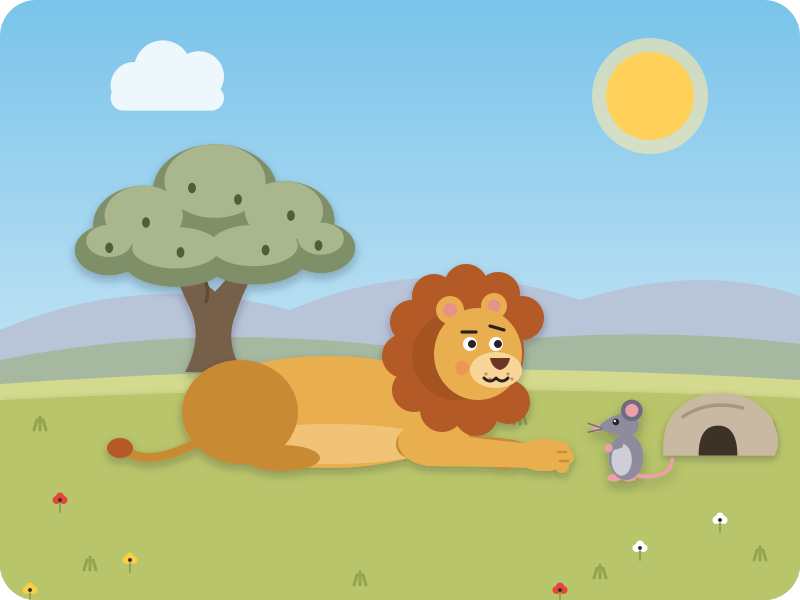
"Oh please, Mister Lion, please let me go!" squeaked the mouse. Kai squeaks
"If you let me go, one day I will help you!"
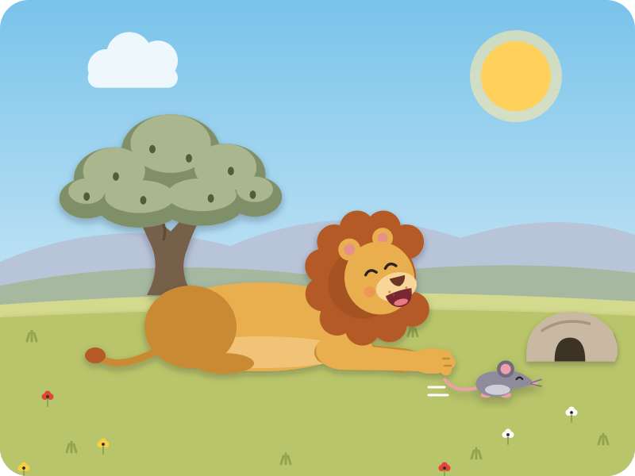
The lion laughed and laughed. "Ho, ho, ho! A tiny mouse, help a great big lion like me?"
But he lifted his paw and let her go. Scurry, scurry — home she ran.
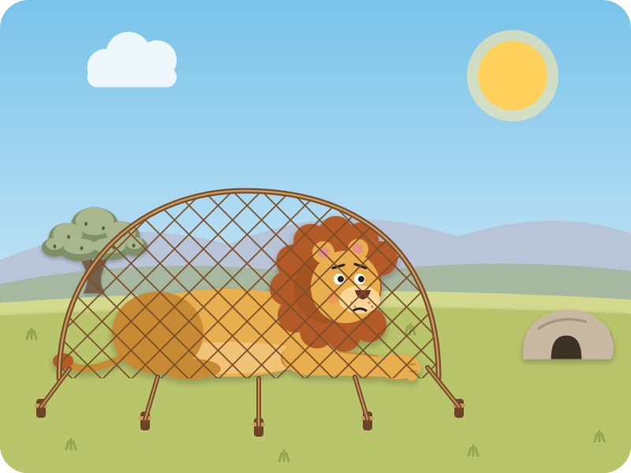
A few days later, the lion went walking in the long grass — and stepped right under a hunter's big rope net. Flump!
Five strong ropes held it down. He pushed and he pulled, but he was stuck.
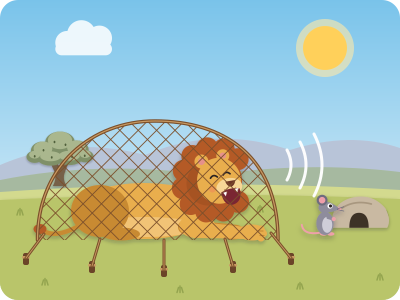
So the lion gave a great big "ROOOAR!" Kai roars
Over the grass went the roar, all the way to a little hole under a rock. And a tiny mouse heard it.
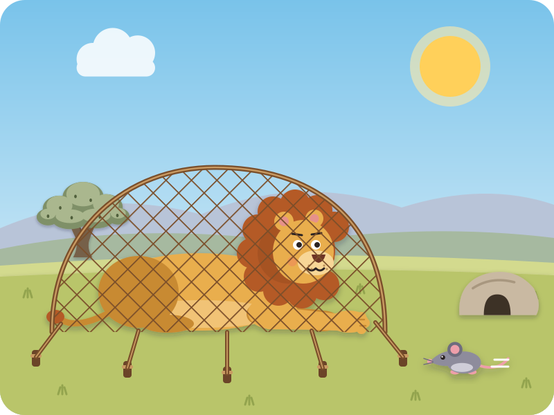
"That's my lion!" said the mouse. Scurry, scurry, scurry!
"Don't worry, Mister Lion. I'm coming!"
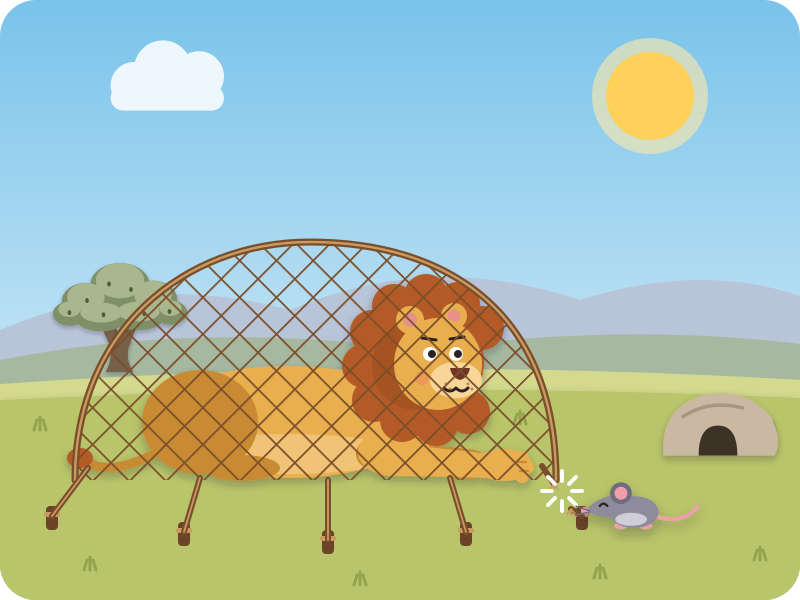
She went to the first rope, and with her sharp little teeth she went… "Nibble, nibble, SNIP!" Kai: "Nibble, nibble, snip!"
How many ropes are snipped? Kai: "One!"
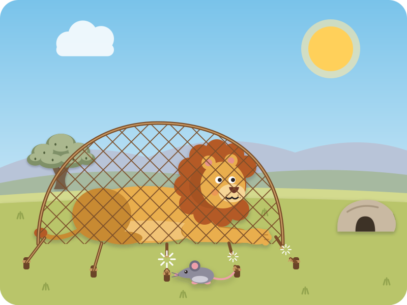
"Nibble, nibble, SNIP!" Kai: "Two!"
"Nibble, nibble, SNIP!" Kai: "Three!"
The lion began to smile.
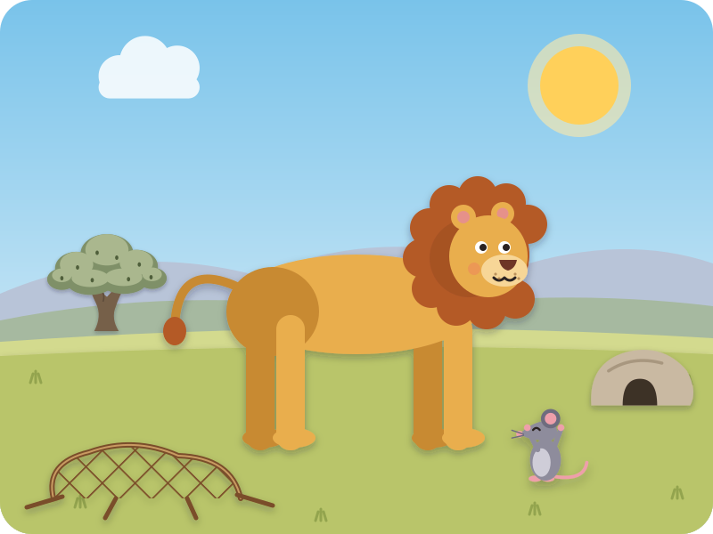
"Nibble, nibble, SNIP!" "Four!" "Nibble, nibble, SNIP!" "FIVE!"
The lion gave a shake, the net slid off, and up he stood. Free!
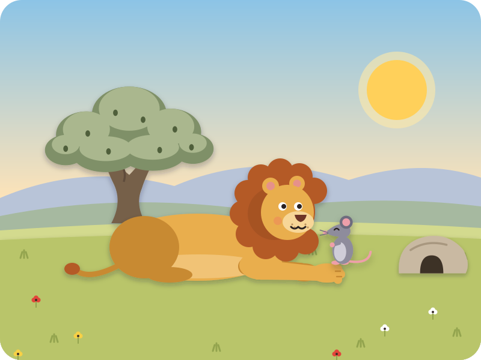
"Thank you, little mouse," said the lion. "I laughed at you — but you were right."
From that day on they were the best of friends. Because little friends can be a BIG help.
The End
"Snip, snap, snout — this tale's told out."
Swipe back to read it again
Driving? Tell it without the page · six beats
The picture book is for home, bedtime, or a passenger. In the car, tell it from memory — bold is Kai's part.
- A great big lion is fast asleep under a tree — "Zzzz… zzzz…"
- A tiny mouse scurries over his paw, and PLOP! — his paw comes down on her tail.
- "Please let me go — one day I'll help you!" The lion laughs, "Ho, ho, ho!", but he lets her go.
- Later the lion is caught under a hunter's rope net, held down by five ropes, and he gives a great big "ROOOAR!"
- The mouse hears him, runs to help, and nibbles the ropes: "Nibble, nibble, snip!" — one, two, three, four, FIVE!
- The lion shakes off the net and he's free, and they're friends ever after — little friends can be a big help!
After the story · car-friendly wondering
"Why did the lion laugh when the mouse said she would help him?"
"Can you do a tiny mouse squeak, and then a great big lion roar?"
"Have you ever helped somebody bigger than you? What did you do?"
Where this story comes from
This is one of Aesop's fables from ancient Greece. Aesop is said to have been a storyteller who lived around the 6th century BCE, but we know very little for certain about him, and the fables that carry his name were written down and gathered together by many different people over the centuries. Scholars number the fables using the Perry Index, made by the classicist Ben Edwin Perry, and this one is Perry 150. The core of the fable is the same in the common versions: a mouse disturbs a sleeping lion, begs to be let go and promises to repay him one day; the lion lets her go; later he is caught in a hunter's net or ropes, and the mouse gnaws through them and sets him free. The wording, and whether the lion laughs at the promise, differ from version to version. This retelling is our own, for a 4-year-old. The mouse catching her tail under his paw, the olive tree, the five ropes and pegs for Kai to count, and the "Nibble, nibble, snip!" refrain are our picture-book choices. No hunter appears and nobody is hurt, and the moral is put simply as "little friends can be a big help". The fable has been retold many times since. One well-known example is Jerry Pinkney's almost wordless picture book The Lion & the Mouse (2009), set on the African plains, which won the 2010 Caldecott Medal.